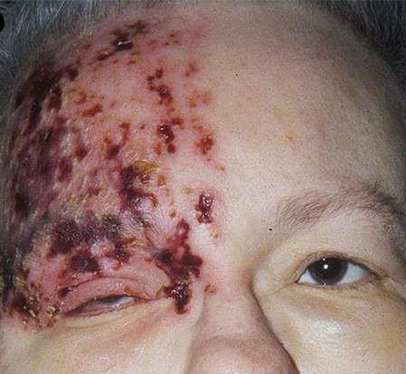

Cornea · Herpes zoster ophthalmicus
Other ocular manifestations and treatment
2) Other ocular manifestations of herpes zoster virus infection:
- Affection of 3rd, 4th and the 6th nerves will cause ocular palsy and paralytic squint.
- Optic nerve with optic neuritis.
- 7th nerve with lagophthalmos and ectropion.
Treatment:
- Rest, sedation and analgesics for the pain.
- Skin lesions: According to the stage:
- Pre-eruptive: local steroid skin ointment.
- Post-eruptive: calamine lotion & antibiotics powder to avoid secondary infection.
- Anti-viral agents such as acyclovir "Zovirax" tablets for 10 days.
- Keratitis and iridocyclitis are treated as usual by local steroids and atropine.
- Any residual corneal opacity may need keratoplasty.
